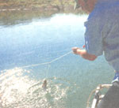
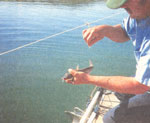
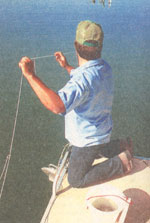
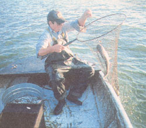
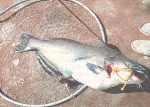
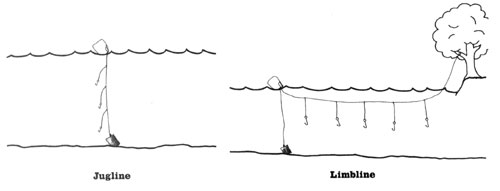
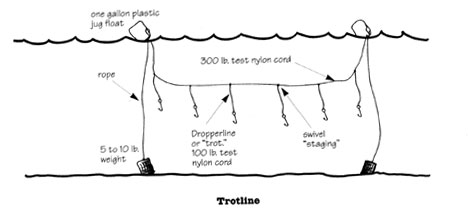

Fake Fishing?
Over the years any number of fishermen have told me that as far as they're concerned, the use of trotlines doesn't qualify as true "angling" or "sportfishing" at all. They are quite certain of this, even after they admit they've never personally had a trotline in the water. "Meat fishing;" or "commercial fishing;" or even "trash fishing" because, supposedly, you mostly catch "trash fish" on a trotline - is what some have called it, often adding, "it oughta be against the law!"
"Well, the days went along and the river went down between its banks again; and about the first thing we done was to bait one of the big hooks with a skinned rabbit and set the line and catched a catfish that was as big as a man ...Jim said he'd never seen a bigger one. He would a' been worth a good deal over at the village. They peddle out such a fish as that by the pound in the market-house there; everybody buys some of him; his meat's as white as snow and makes a good fry. " - The Adventures of Huckleberry Finn
For a time I, too, shared a certain stereotyped view of the trotline fisherman: a good ol'boy in bib overalls, head topped by a tractor cap, big chew under the lip, hauling all the big ones in over the gunwale by brute force and stacking them like cordwood into fiat-bottomed boats. Graceless ... barbaric. The stereotype, when it showed true, was enough to raise the hackles and rile the envy of any nearby fisherman with an empty stringer and a hightech rod and reel.
After some experience with trotlines, both on my own and with some anglers who actually make a living at it, I'm inclined to avoid the argument. I don't know if trotline fishing is "sporting" or not. I do know it's a fun way to fish, it takes some skill, and it will put fresh catch on your dinner table.
Trotlines, along with limblines, throwlines, and juglines, are all varieties of setlines. In my home state of New Mexico, the Department of Game & Fish defines a trotline or setline as "a line without a rod or reel attached that need not be held in the hand or closely attended."
Specifically, a trotline is a setline with multiple hooks that is employed in the open water of a lake or river by means of weights and floats. The number of hooks may vary from a half dozen to over a hundred, the latter being the sort used by commercial "longliners" in some southern states.
Generally, the hooks are set about 3 to 4 feet apart and attached to the main line by shorter lines called dropper lines or "trots." A swivel is used to attach the trots to the main line and this connection is called the "staging."
As you begin this age-old rural pursuit you will of course want to get the parlance right, so you don't seem like too much of a novice. Calling the dropper lines "trots" and the swivel connection the "staging" will put you right up there with the old salts. Also, don't ever talk about "checking" your trottine or "taking a look at" your trotline. You always "run" a trotline This makes sense because the word trotline, according to my dictionary, comes from the old Germanic word "trotten," meaning "to tread, pace, or run." So when you "run" your trotline you are in keeping with the proper etymology of the sport.
You can often find ready-made trotlines for sale in sporting goods stores where fishing gear is sold. You can order a good trotline from Netcraft Co., 2800 Tremainsville Rd., Toledo, OH 43613; they'll send you a free catalog. Or you can easily make a trotline yourself.
Another option is to make the trotline yourself. The mainline should be nylon cord about 300 lb. test; the trots also of nylon about 100 lb. test. For a typical trotline, lay out about 100 feet of the 300 lb. test line. Slide a large swivel down the line to the far end, then make a half hitch to hold the swivel on the line.
Then slide another swivel down the line to within 3 to 4 feet of the first one, make another half hitch, and continue doing this until you've got 20 to 25 swivels in place, each half-hitched so they won't slide on the line.
Then cut 20 to 25 trots 12 to 18 inches long. Tie one end of each trot to a hook, the other end of each trot to a swivel. Add weights and floats and you've got a trotline.
A trotline set in open water will use one weight and one float at each end, with the trotline suspended inbetween. A weight you can tie to that weighs 5 to 10 pounds will do, and is set on the bottom. It is connected to a one gallon plastic jug (usually an old bleach or juice bottle) floating on the surface by a medium-weight nylon rope.
Tie one end of your trotline to the handle of the float. Then, using oars or a paddle, move your boat away from the weight and float-or use the wind to drift and as the hooks come along, you bait them and drop them in.
One fisherman can do it but it's easier with two as one can row while the other baits up. When you get to the other end of the line you tie it to the other float and set another weight on the bottom. Adjust the tension on the line depending on whether you want it to lay near the surface or the bottom. Your trotline is set.
Most states require that a trotline be run a minimum of once every 24 hours. For best results you should run your line at least once every 12 hours. Morning and evening is standard, and a serious trotliner will often run his line several times during the night. The longer the fish is on the line the greater the chance he'll get away.
Be advised that 100 feet of trotline can turn into an incredible snaggle if you don't gather it up and carry it right. I've pulled trotlines into the boat and ended up pretty well catching myself in a rat's nest of hooks and knots. For a long line with a lot of hooks a five gallon bucket works well. Circle the line into the bottom of the bucket as you gather it up and hang the hooks on the rim, in order, as they come along. Reverse the procedure to lay the line out.
A condensed version of this is to use about a two foot length of 3" plastic drain pipe. Wind the line on the bottom end of the pipe as you gather it up and hang the hooks in order on the rim at the other end as they come along. Again, reverse the procedure to lay the line out.
Wrap a trotline haphazardly on any old piece of driftwood-as I did before I learned better-and I guarantee you'll end up cussing yourself.
Limblines, throwlines, and juglines are variations on the same theme. A limbline is a trotline that's tied at one end to a limb or bush on the shore. It may employ multiple hooks with a float and weight at the far end to hold the line out in the water. Or it may be a single baited hook dangling in the water. The important thing is that the limb "give." If you tie the line to a stout limb or tree or any object that doesn't flex, a big catfish, gar, or carp will pull loose, break the line, or straighten the hook. This is also the reason the weights on a trotline should not be too heavy.
A throwline is simply a trotline that's baited up on shore and thrown out from the bank with a weight attached.
A jugline is typically a line tied to a single, floating, one gallon jug-sort of a big bobber. The line may be weighted to the bottom and carries several hooks baited at different depths. Thus, while a "longline" type trotline fishes horizontally in the water, a jugline fishes vertically.
An intriguing variation on the jugline method was told to me by L.V. Hurst, longtime angler of the Tennessee River near Savannah, Tennessee. L.V and friends would go out on the river of a moonlit night, bait some hooks, tie short lines to some jugs, and toss them over the side. These jugs weren't weighted to the bottom; they floated and drifted. Soon they had a dozen or so juglines floating slowly down the Tennessee River.
L.V and friends would float along with the jugs until one would start to jerk around on top of the water. That meant a catfish and they'd go pick him up. If it was a real good fish the big bobber would go right under. "It would be real quiet out there at night," L.V told me, "and when a jug would go under you'd hear the water "plop:"This is a delightful way to find some adventure in the night, and you come home with some fresh river fish for breakfast to boot!
You bait a trotline according to what you want to catch. You can't beat worms for bullheads or drum. For carp, buffalo, and suckers, large kernels of field corn soaked overnight in a jello solution as sweetener is standard. Some say raspberry jello is the best. Some say strawberry, or even grape. I don't think it makes any difference. Put a couple of large kernels of sweetened corn on a hook and carp and suckers will come to your bait.
Gar like cut bait. Put chunks of carp, sucker meat, or shad on the hooks. Or use smelt, beef liver, or some other relatively. cheap meat.
All the above so-called "rough fish" are fine table fare when taken from good water and properly prepared. A good source of information on preparing and cooking these fish is the book Fishing For Buffalo and Other Rough Fish by Rob Buffler and Tom Dickson (Culpepper Press, 1990).
Undoubtedly, at least 90% of the trotlines set in America are intended to catch catfish. Indeed, in the minds of many anglers, trotlining is and always will be catfishing. The three major species are the channel catfish, blue catfish, and flathead catfish. At least one of these species is found in every state in the U.S. except for Maine and Alaska.
Although bass, walleye, and other "gamefish" will occasionally snag themselves on a trotline, the usual catch is one of the socalled "rough fish": catfish, bullheads, carp, buffalo, suckers, drum, and garfish. Bullheads, carp, buffalo, and suckers all have a relatively small mouth and a #4 or #2 hook is about right. Catfish, large gar, and drum have large mouths and a 2/0, 4/0, or even 6/0 hook should be used. (For new fishermen, the above sizes run from the smallest hook- #4 - the largest - 6/0).
Channel catfish average 2 to 10 pounds; 30 pounders are taken every year. Blue and flathead catfish will average 5 to 25 pounds and occasionally exceed 100 pounds! Any and all are among the best eating freshwater fish anywhere; those of "eating size," between 1 and 12 pounds, are the most savory. Most of the trophy-size catfish should be-but too rarely are-returned to the waters to carry on their kind and to thrill other anglers.
Channel catfish and blue catfish are commonly caught on cut bait, such as described above for gar, and they will take live bait like worms, minnows, or crayfish as well. Flathead catfish feed almost exclusively on live bait. In my experience waterdogs, the gilled stage of the tiger salamander, work great, as well as a bluegill or sunfish about 5 inches long.
The skill involved in trotlining involves being able to handle all that line and all those hooks with facility, using the right bait for the right fish, and especially learning the water so you know where to set your line. Only experience can make you really good at it, but even a beginner will catch some fish. The thrill involved in trotlining is harder to describe.
The best comparison I can make is to say it's a lot like Christmas when you were a little kid. You recall how you lay awake most of the night, wondering what you would find under the tree the next morning. Trotlining is much the same. There's no telling what you're going to find when you go to run that line. And you don't need to be a little kid to get high on the anticipation.
Consider the time last summer when my wife and I put out a limbline with a dozen hooks in Elephant Butte Reservoir in New Mexico. The next morning when we rounded the bend we saw that limb shaking like it was caught in a high wind, and the float was bobbing and jerking on the water like a nervous duck. Our excitement was contained only by the careful intensity with which we brought the line in, hand over hand. We had three nice channel cats at 3 to 8 pounds, and a 10 pound carp. We promptly filleted them and put them on ice. Another fish had enticingly straightened a stout 2/0 hook in making his escape. You try to straighten a 2/0 hook sometime, then tell me how big he was!
Consider Dan Grider who caught a world-record blue catfish in 1989 in Lake Texhoma, Oklahoma. The 117-pound fish was caught on a jugline weighted to the bottom. "Jug and weights and all," Don Grider recounted to me, "he towed the boat around for an hour before he got himself tangled up in another trotline and finally gave it up."
Consider next Pick Bland of Lake Livingston, Texas and his 134 pound Flathead Catfish. Bland told me that a 134 pound flathead is a fish of considerable power, and that landing the fish had more in common with sharking than catfishing."With trotlines," he said, "for any fish over fifty pounds, you don't want to pull on them too much-that's how the big ones get away. You tie an extra jug or two to the line and let them wear themselves out." He said that once he saw what he had with that 134 pounder, he tied four one-gallon jugs to the line. "He took their down and stayed under for eight minutes before he came to the surface and bellied up," Bland said.
Of course the great majority of what you catch on your trotline will be pan-sized fish. This is mostly what you're after. But it is intriguing to consider that the harvest from a trotline includes not only fresh fish, but sport, adventure and some great stories as well.
Huck and Jim set out a trotline every night going down the Big Muddy. They sure had some stories to tell. That's mostly how Huck and Jim fed themselves on their river trip. Without trotlines they wouldn't have made it.
If you run trotlines, pretty soon you'll have some stories to tell, too. They won't resemble the stories that bass casters and fly fishermen tell, but you might be telling the folks at the bait shop: "And I went out the other morning to run that line and as I approached the float, that one-gallon jug went down like a sinking ship!"
Some states do not allow setlines or trotlines of any kind. The great majority of states do allow trotlines, but there are always rules and restrictions concerning the waters where they may be set, how many lines you may set out, how many hooks you may use, what sort of ID tag you need to attach to your line, etc. And of course you will need a fishing license. Be sure to check your state's game and fish regulations before you set out your trotline.
This simple, tried-and-true catfish recipe works great for other fish too.
1) Wash catfish filets in cold water and pat dry.
2) Make catfish batter of buttermilk with one egg stirred in.
3) Soak filet in batter, then dip and cover in corn meal.
4) Fry in hot bacon grease or cooking oil in non-stick fry pan.
5) Salt, pepper, and dribble on a little lemon juice to taste.
|
 Trotline fishing is fun and efficient. |
 "Run" your line frequently; the longer a fish stays on the line, the more likely it is to escape. |
 A trotline is basically a setline with multiple hooks that is employed in the open water of a lake or river by means of weights and floats. |
|
 The catch of the day! |
 |
 |
|
 |
|
|